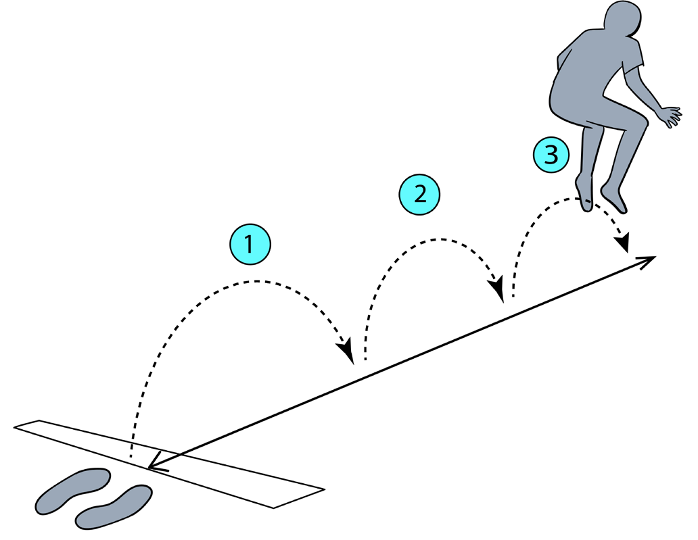

Power
Power is the force produced by the body over a short period of time when doing a work out. Strength and speed are the basic components of power. Vertical jump test and 3-hop test are some examples of power testing for lower extremity. Weighted medicine ball throw test can be used to assess upper extremity power.
Exercises for improving power
The exercises for improving power include, squat jump, box jump, sprinting, leg press and medicine ball squat throw.
The following steps indicate how to perform the 3-hop jump:
(i) Stand behind the line with the leg shoulder width apart;
(ii) Use double-leg to perform 3 consecutive broad non-stop jumps, as shown in Figure 3.11;
(iii) Use forward and vertical jump to go as far as possible;

(iv) Then, measure the distance from the takeoff line to the nearest point of contact on the landing of the third and final jump; and
(v) Keep working on it to increase the distance which is the sign of improved power. Figure 3.11: The 3-hop jump